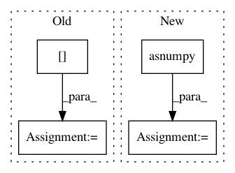

72caa3677f5f9cc09ed98324c76454c38a7e8098,lib/metric.py,MaskLogLossMetric,update,#MaskLogLossMetric#Any#Any#,137
Before Change
labels = preds[self.pred.index("mask_labels")].asnumpy().reshape(-1)
valid_inds = np.where(weights>0)[0]
labels = labels[valid_inds]
// Compute the logarithm
pred = pred[valid_inds]+ 1e-14
// Compute cross entropy
loss = -np.log(pred)*labels - np.log(1-pred)*(1-labels)
After Change
label = preds[self.pred.index("mask_targets")]
// label (b, p)
label = label.asnumpy().astype("int32").reshape((-1))
// pred (b, c, p) or (b, c, h, w) --> (b, p, c) --> (b*p, c)
pred = pred.asnumpy().reshape((pred.shape[0], pred.shape[1], -1)).transpose((0, 2, 1))
pred = pred.reshape((label.shape[0], -1))
// filter with keep_inds
keep_inds = np.where(label != -1)[0]
label = label[keep_inds]
cls = pred[keep_inds, label]
cls += 1e-14
cls_loss = -1 * np.log(cls)
cls_loss = np.sum(cls_loss)
self.sum_metric += cls_loss
self.num_inst += label.shape[0]
In pattern: SUPERPATTERN
Frequency: 3
Non-data size: 4
Instances
Project Name: mahyarnajibi/SNIPER
Commit Name: 72caa3677f5f9cc09ed98324c76454c38a7e8098
Time: 2018-06-04
Author: mahyarnajibi@gmail.com
File Name: lib/metric.py
Class Name: MaskLogLossMetric
Method Name: update
Project Name: IBM/adversarial-robustness-toolbox
Commit Name: 8acacf7ecdddd031366f2c044bdc6ce5ba8e5a62
Time: 2018-10-04
Author: Maria-Irina.Nicolae@ibm.com
File Name: art/classifiers/mxnet.py
Class Name: MXTextClassifier
Method Name: predict_from_embedding
Project Name: dmlc/dgl
Commit Name: f370e628cdf6dcff6f32392a35e1789be68630a8
Time: 2019-02-19
Author: zhengda1936@gmail.com
File Name: tests/compute/test_sampler.py
Class Name:
Method Name: verify_subgraph